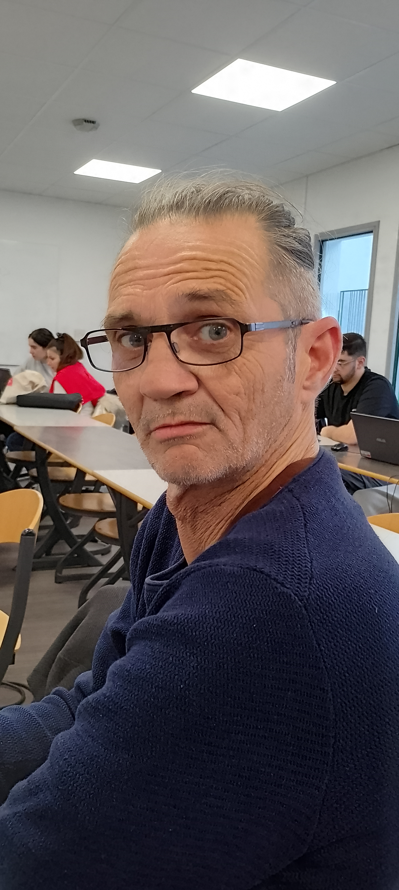

Dominique

Présentation
Peps et de niaque sont ses mêtres mots.
Il multiplit les métiers interessant:
Photocompositeur dans l'imprimerie
Animateur-directeur d'enfants dans les centres de loisirs
Oxycoupeur
Chauffeur de bus
Formateur
Qui suis-je?
Passionné de sport, de musique, de voyage
Mes projets professionnels?
Former dans l'informatique, voir par la suite pour développer
lien vers la vidéolien vers la vidéo